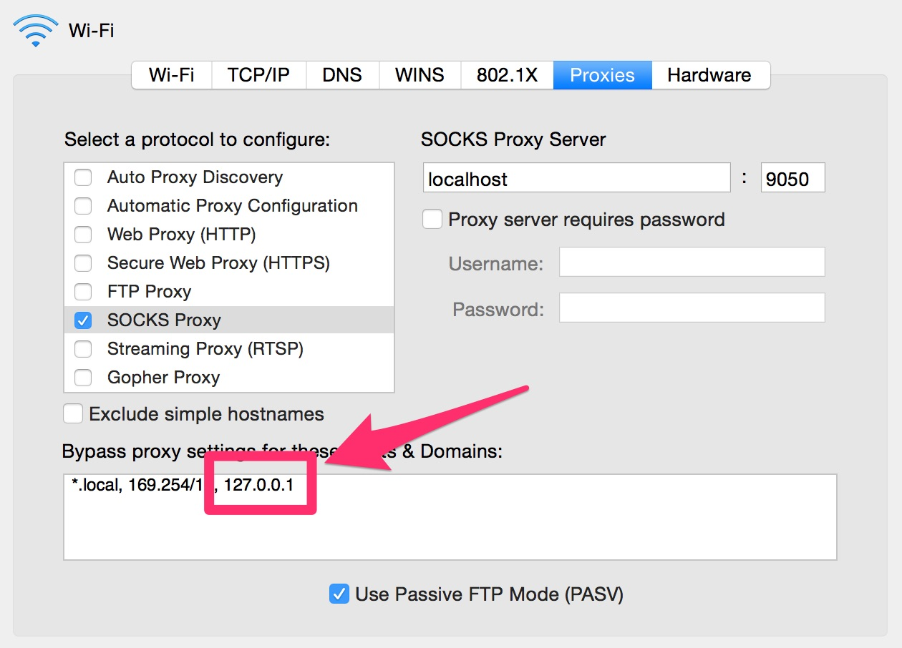

Uh oh!
WordPress.com ran into an error! (code
Using a proxy?
Try again
How to bypass your proxy for this app
If you are using a system proxy, you will need to add an exclusion for
127.0.0.1 to your proxy settings.
- Open
System Preferences...
- Pick
Network
- Pick whichever connection is being proxied (probably Wi-fi)
- Click on
Advanced
- Click on
Proxies
-
Add
, 127.0.0.1 to the
Bypass proxy settings for these hosts - the leading comma is important
- Press
OK
- Press
Apply - this last step is also important!
